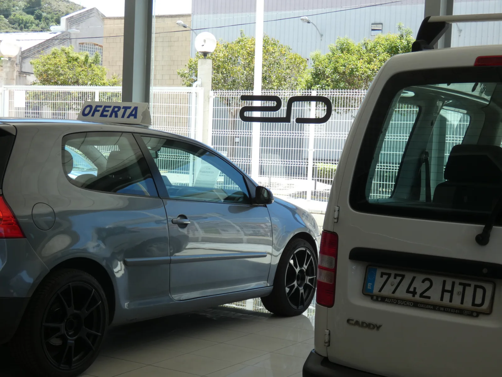

Cullera, Valencia · Desde 1979
Concesionario multimarca con más de 45 años cuidándote. 2.000 m² de instalaciones y taller propio.
Stock actual
Todos nuestros vehículos se entregan revisados, probados y con garantía propia de 12 meses.
Por qué elegirnos
Atención personalizada
Te acompañamos en cada paso de la compra
Revisados y probados
Todos los vehículos pasan por nuestro taller antes de entregarse
12 meses de garantía
Garantía propia y externa disponible
Financiación
Adaptamos las cuotas a tu situación
Aceptamos tu coche
Tu vehículo como parte del pago
Taller propio
Mecánica, chapa, pintura y electricidad
Taller propio
Nuestro taller cuenta con los mejores sistemas de diagnosis y maquinaria propia para ofrecerte el mejor servicio en mecánica, carrocería, pintura y electricidad.
Sistemas de diagnosis de última generación
Maquinaria propia de chapa y pintura
Sustitución de neumáticos y geometría
Gestión completa de siniestros
Tratamiento de pulido y restauración

Opiniones de clientes
"Llevaba el coche de la empresa y siempre fueron muy amables, el personal muy agradable y atento. Si la reparación había de ser diferente a la planteada, te llamaban para informarte y si era más cara te asesoraban del nuevo precio por si no estabas de acuerdo. El personal de recepción apunta muy bien lo que necesitas y te atiende con mucha profesionalidad. Seguir así, porque hay pocos talleres decentes donde no te engañen, y eso hace crecer la clientela y las recomendaciones a futuros clientes."
"Tenía que hacer una revisión urgente a mi coche y ver un ruido extraño que hacía. Las dos chicas se portaron maravillosamente bien conmigo, cumplieron con el tiempo dicho y la atención recibida fue óptima. Me dijeron que ya podría viajar tranquila a Madrid, y así voy a ir, tranquila, porque ellos me transmitieron tranquilidad. Calidad, precio está bien y es un taller serio. Desde luego en cuanto me lo avise el coche, no dudaré en volver. Un abrazo y muchas gracias al equipo SUCRO."
"El servicio fue sumamente competente, rápido y a un precio razonable. Tuve una avería con mi Volkswagen. Diagnosticaron el problema sin cita previa, pidieron la pieza y la reemplazaron en menos de una hora (incluso me mostraron la pieza dañada). El costo del servicio estuvo dentro del promedio, o incluso por debajo. Excelente servicio, sin duda."
"Necesitaba una revisión y cambio de llantas para mi auto arrendado. El servicio y la calidad del trabajo fueron excelentes. El dueño se encargó de todo, desde llevarme a casa y traerme de vuelta hasta llamar a la compañía de arrendamiento para coordinar todo lo necesario. Además, hablaba inglés, lo cual fue una gran ventaja. Gracias, José."